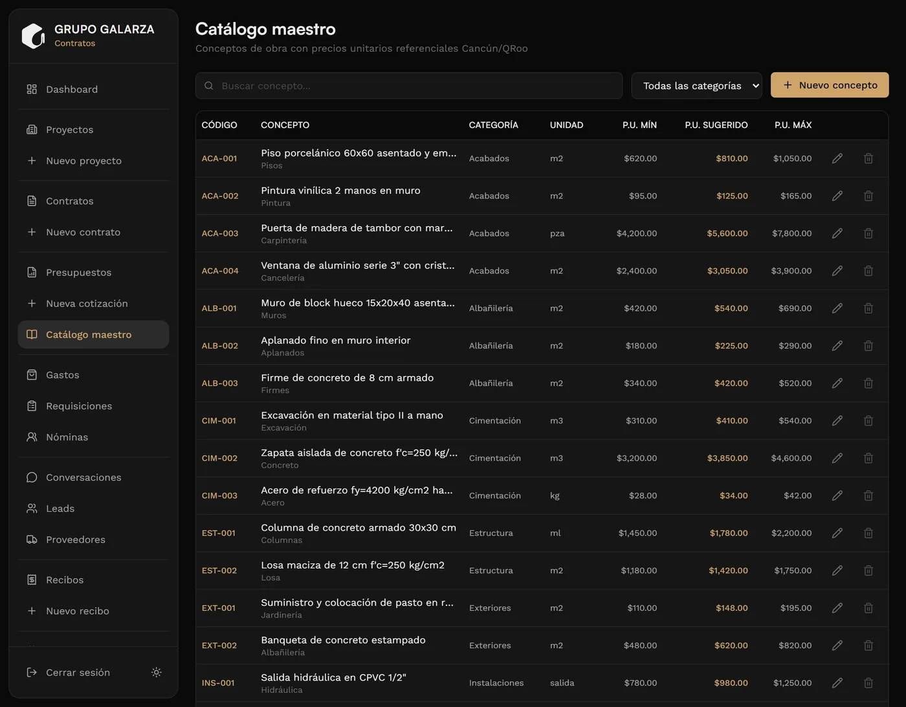
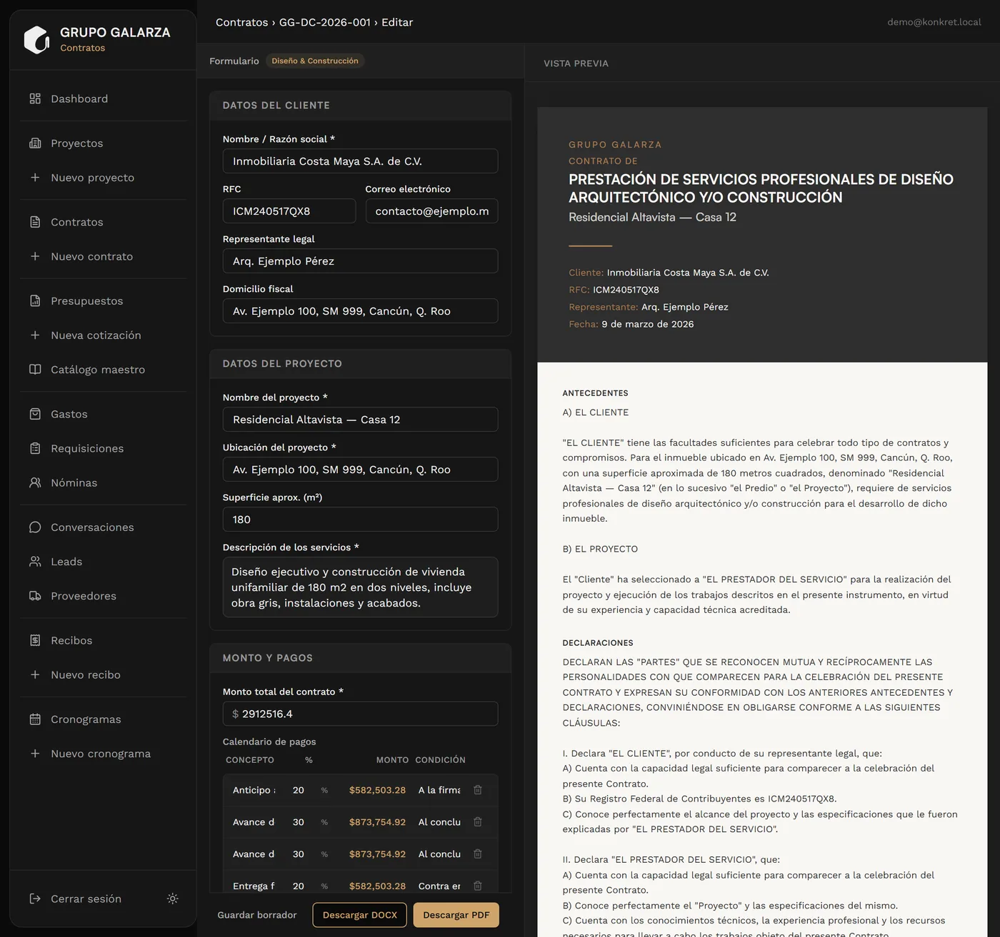
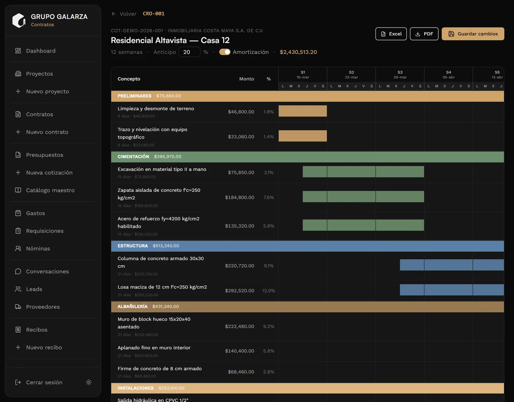
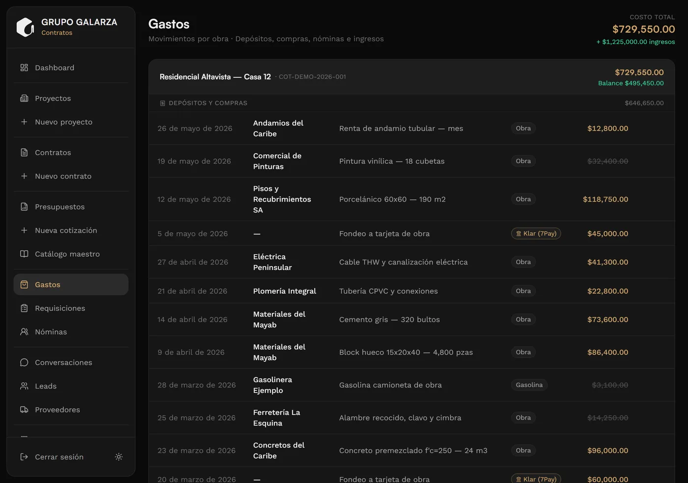
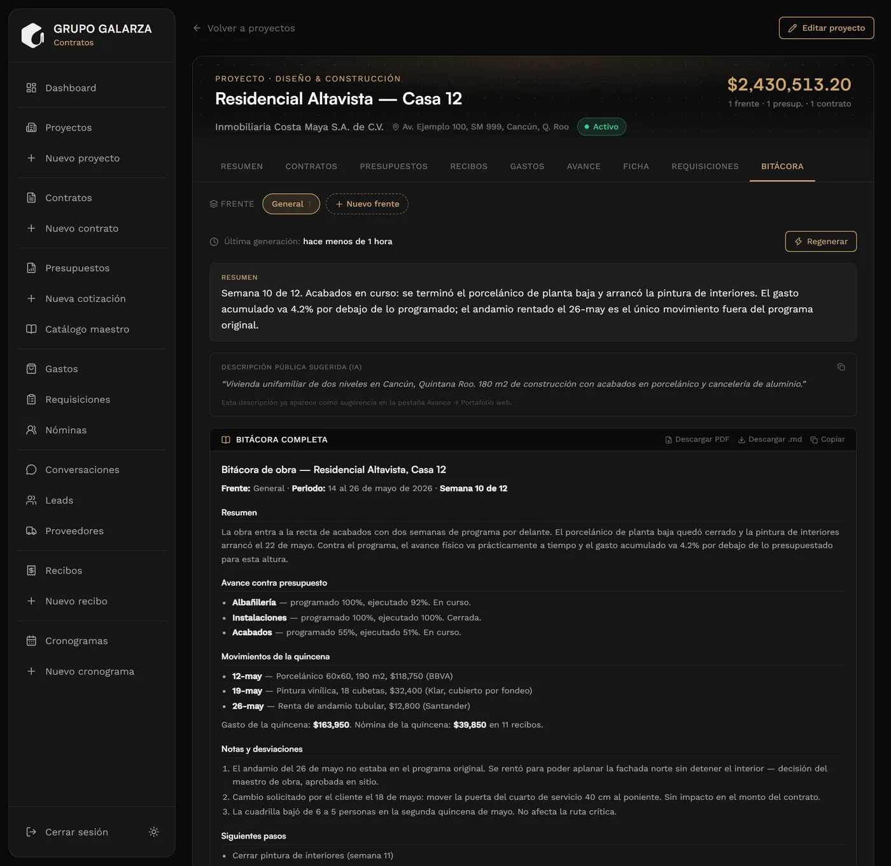
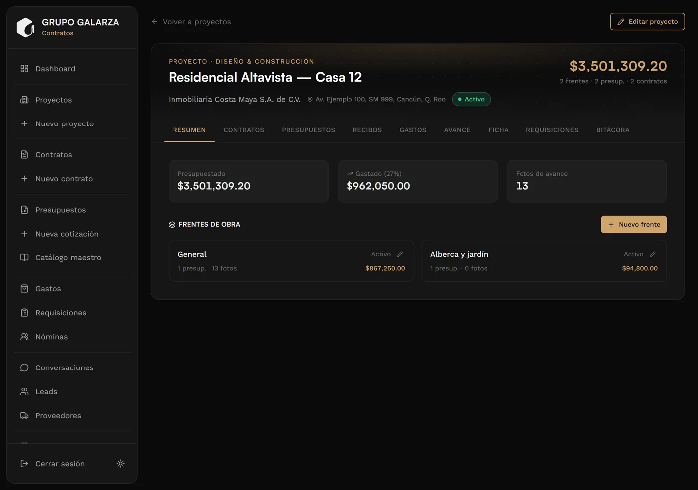

August 26, 2026
7 min read
Konkret: the whole job in one place
We built it to run our own builds, and we are opening it to the first firms outside our own. From a first message to the final day of the site log.
The contract that gets signed late. The budget only the person who built it understands, sitting in a spreadsheet. Site expenses nobody reconciles against the quote. The change order that got built and never billed, because the client's approval is sitting in somebody else's conversation.
These are the same problems in any construction firm, design practice or developer, and none of them get solved with more discipline. They get solved when the job stops living in six places at once.
That is Konkret: the system we built in-house at Grupo Galarza to run our own business, from the first WhatsApp message to the last photo of a finished build. It started as a contract generator and today it runs the whole operation. We use it every day, and we are only now opening it to a small number of firms outside our own.
Your crew is not going to learn a new system
They do not have to. The job keeps running over WhatsApp, because it is the one thing everybody already uses. What changes is what happens after the message.
A client writes, and Alejandra — the assistant who answers at any hour — handles it first and notes down who they are, what they need and what was agreed. Your foreman photographs the receipt and the expense is captured, read and classified; fixing it takes a second. Someone asks for material from the site and it becomes a requisition with its own folio and its own list.
Nobody on site opens anything. You are the one who opens the system, and it is all already in there.
What you see on Monday morning
A single screen, filterable by project, with what is signed, what is quoted and still in play, what has been collected, and which schedules are running. Plus the two numbers almost nobody has in time: what the build is actually costing you, and how much you have collected against that.
It opens on your phone like any other app, on iPhone and Android, and it tells you when a new client comes in or an expense is recorded.
From the first message to a signed contract
What arrives over WhatsApp and what arrives through the website form land on the same list, where you can see whether it has been answered, whether it is still a conversation, or whether it closed. Nobody copies and pastes emails between two systems.
When it is time to quote, the number does not come out of the estimator's memory. It comes out of a catalog of more than 700 construction concepts with reference pricing for Cancún and Quintana Roo — a minimum, a maximum and a suggested price for each one. The same build can be presented at three levels — economy, standard and premium — which are not three separate budgets but the same one repriced against those three columns: the client decides how much to invest looking at all three numbers, not guessing.

And the contract:
- Full legal clauses, different for each branch — Urbanization, Design, Construction, Maintenance, Real Estate Development, and Photo & Video — each with its own subject matter, payment terms, term and penalties.
- The payment schedule will not close unless the percentages add up to 100%. No more signing a contract with a payment missing from it.
- The amount in words, the folio for the year and the VAT come out on their own, worded the way a Mexican contract requires. A figure written wrong no longer sends the document back for review on signing day.
- It comes out as PDF or Word and goes out by email from there, and you can see at a glance which one is a draft, which one was sent and which one is signed.

Receipts work the same way, client and third party, each with its own numbering and attached to the contract or budget it belongs to.
What happens on site arrives on its own
The schedule is planned by working day, Monday through Saturday, not by weeks: every concept in the budget falls on the days it is actually executed. And because every concept carries its price, the program does not only tell you what happens that week — it tells you what that week is going to cost. Payments are tied to milestones with their release conditions, and the down payment prorates itself against what follows when that is how it was agreed. To send to the client it exports to Excel with the Gantt already formatted, grouped by week there.

Underneath runs the ledger: expenses, deposits and client payments, broken down by bank and by category so every peso gets counted once and only once. Payroll runs per pay period and per work front, with a receipt per employee, and it feeds straight into the cost of the build — labor stops being the number you estimate at the end, when nothing can be done about it.

Every progress photo is analyzed on its own and returns the detected stage, estimated progress, visible materials and notes on what can be seen. It supports the site supervisor, it does not replace one — but it is what lets you send a client an update with a number in it instead of a "we are doing fine".
And every night — or on demand, which takes half a minute — Konkret pulls together the budget scope, the planned schedule and the timeline of photos and expenses, and writes that day's site log: entries classified as progress, expense, milestone or note, a short summary and the full document. Then, for good measure, it drafts the publishable version of the build under the rule we always follow — no client name, no address, no amounts, no vendors — ready for the portfolio.

Why a spreadsheet breaks on site
A spreadsheet takes for granted that one client is one contract, and that one contract is one budget. On site that never happens: there is a base contract and two change orders, the house and the storefront move at different speeds, and a new quote does not erase what has already been spent.
So Konkret keeps the project — the client and the site — separate from each work front running inside it, and from each budget drawn up for that front. The paperwork hangs off the budget; the build hangs off the front. The result is that one front keeps a single real history even after five different quotes.

How proven each part is
Not everything has the same mileage, and we would rather say so before the demo than after.
Contracts, budgets, projects, fronts and expenses run our daily operation: what you see is what we use. The schedule, the automatic site log, the photo analysis, payroll and requisitions are finished and they work, but with the mileage of one house, not an industrial park. Anyone using them from outside will be among the first, and will know it from day one.
The screenshots on this page come from a demonstration build: the client, the amounts and the dates are invented. We would rather do that than show a real client's data.
How to see it
Konkret was built to solve a problem of ours and it has been running our operation for a while. We are only now opening it up, so there is no price list and no monthly plan: we are taking on a small number of firms as the first ones, and we agree the scope with each of them separately. We are going slowly on purpose.
The way to get to know it is half an hour on a call with the person who built it, on your own case: you tell us what job you have in front of you right now — a house, a storefront, two fronts at the same time — and we show you what it would look like inside. No slides: the system, open. And if it turns out it is not for you, we will be the first to say so.